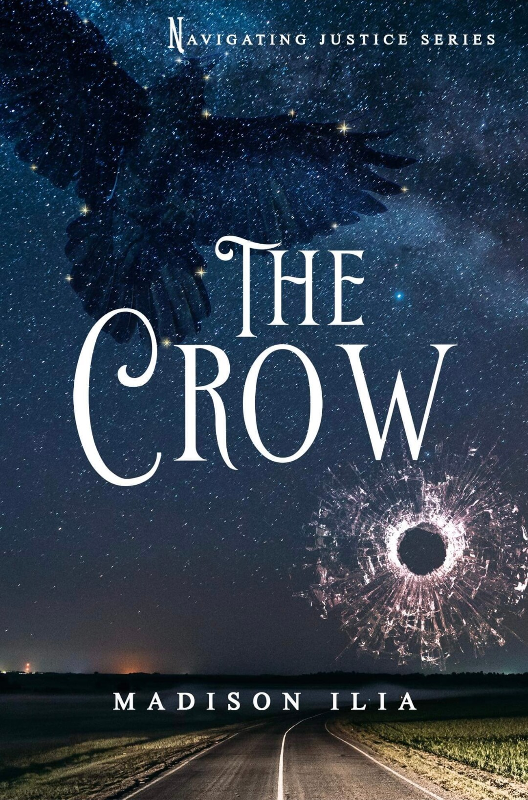

Navigating Justice: The Crow (2022)
My debut novel, Navigating Justice: The Crow, is currently in the editing phase! This is the first entry in the Navigating Justice murder mystery series, and is expected to be released in early 2022.
My debut novel, Navigating Justice: The Crow, is currently in the editing phase! This is the first entry in the Navigating Justice murder mystery series, and is expected to be released in early 2022.